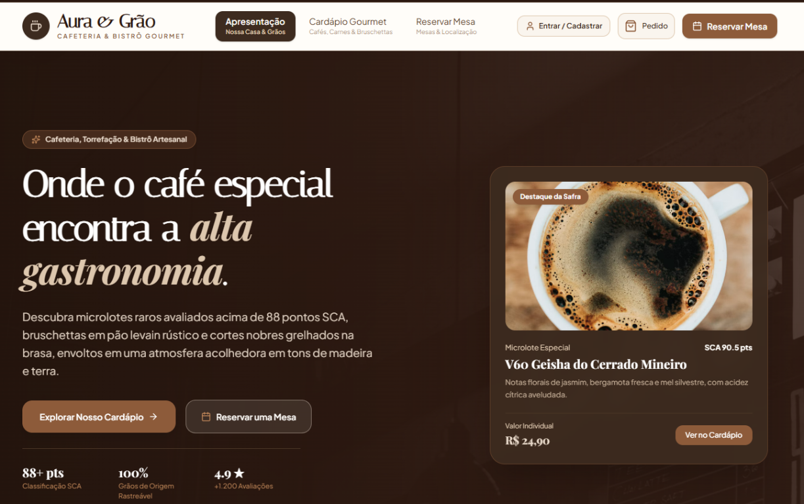
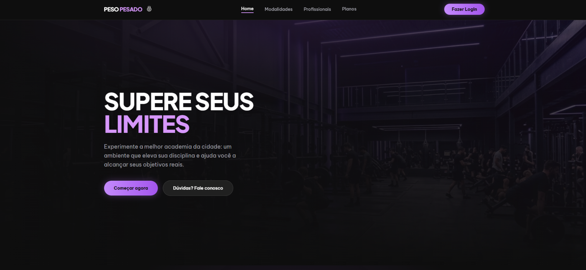

01
Análise
Mapeamos sua rotina e encontramos tarefas que podem ser automatizadas.
Criamos automações, sistemas, sites e análises personalizadas para empresas que querem reduzir tarefas manuais, ganhar eficiência e escalar.
Entendemos onde sua operação perde tempo e transformamos esse processo em um fluxo inteligente, conectado e escalável.
Mapeamos sua rotina e encontramos tarefas que podem ser automatizadas.
Criamos o agente ou fluxo de IA de acordo com sua necessidade.
Conectamos a solução às ferramentas que sua empresa já utiliza.
Acompanhamos a solução e aprimoramos o fluxo conforme sua operação cresce.
Conheça soluções digitais desenvolvidas pela Cortex Labs para empresas que querem presença, eficiência e crescimento.

Visitar projeto ↗Sistema para cafeteria gourmet com apresentação da marca, cardápio e experiência de reservas.

Visitar projeto ↗Plataforma para academias com login para administradores e alunos, gestão de clientes, planos e controle financeiro.
Novos contatos são classificados e encaminhados sem depender de tarefas manuais.
Informações são extraídas, organizadas e enviadas para o sistema certo.
Não entregamos apenas tecnologia. Construímos soluções para problemas específicos.
Agentes capazes de conversar, analisar informações e executar tarefas automaticamente.
Explorar solução ↗Conectamos ferramentas e eliminamos etapas manuais da operação.
Explorar solução ↗Respostas rápidas e fluxos automatizados para atender clientes em escala.
Explorar solução ↗APIs, CRM, WhatsApp, bancos de dados e outras ferramentas trabalhando juntas.
Explorar solução ↗Você nos conta sobre sua empresa, rotina e principal desafio.
Identificamos onde a IA e a automação podem gerar impacto.
Apresentamos uma solução personalizada e o escopo do projeto.
Desenvolvemos, testamos e colocamos a automação para funcionar.
Acompanhamos os resultados e ajustamos a solução quando necessário.
A Cortex Labs nasceu com um objetivo simples: transformar o potencial da inteligência artificial em soluções práticas para empresas.
Unimos automação, agentes de IA e integrações para tirar processos repetitivos do caminho e permitir que pessoas foquem no que realmente importa.
Vamos descobrir juntos o que pode ser automatizado.
Falar com a Cortex Labs ↗